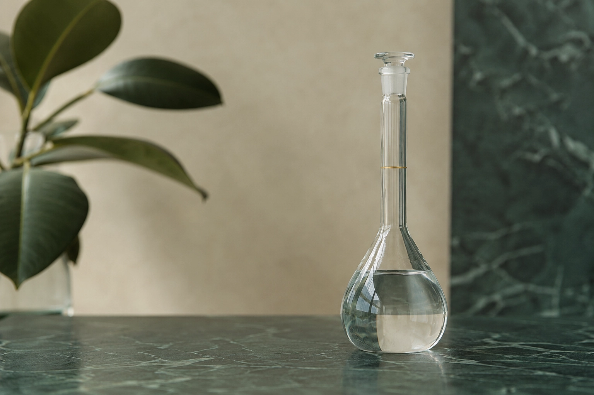

Química básica
¿Qué es la molaridad y cómo se calcula?
Qué significa la molaridad, cómo se calcula a partir de gramos, cuánto reactivo hay que pesar para preparar una solución y cuáles son los errores más frecuentes en el laboratorio.

¿Qué es la molaridad?
La molaridad o concentración molar (símbolo M) indica cuántos moles de soluto hay disueltos en un litro de solución (disolución, en España): M = n / V. Es la unidad de concentración más usada en química analítica, bioquímica y procesos industriales, porque relaciona directamente la cantidad de sustancia con volúmenes que se pueden medir.
Su unidad habitual es el mol/L, aceptada para su uso con el Sistema Internacional (la unidad SI coherente es el mol/m³). En el laboratorio se dice simplemente «molar» y se escribe la letra M: una solución de NaOH 0,1 M contiene 0,1 mol de hidróxido de sodio por cada litro de solución.
donde M = molaridad (mol/L); n = moles de soluto (mol); V = volumen de la solución (L)
Cómo calcular la molaridad a partir de gramos
Si se conoce la masa de soluto pesada, primero se pasa a moles dividiendo por la masa molar (MM) y después se divide por el volumen de la solución en litros:
donde m = masa de soluto (g); MM = masa molar (g/mol); V = volumen de la solución (L)
n = 4,00 g / 40,00 g/mol = 0,100 mol
M = 0,100 mol / 0,2500 L = 0,400 M
Para obtener la masa molar de cualquier compuesto a partir de su fórmula se puede usar la calculadora de masa molar.
¿Cómo se calcula cuánto pesar?
En la práctica, lo que hay que saber no es cuántos moles se necesitan (el mol no se mide directamente en la balanza), sino cuántos gramos hay que pesar. Para pasar de moles a gramos se usa la masa molar (MM, también llamada peso molecular) del compuesto:
Con corrección por pureza: masa (g) = (M × V (L) × MM) / (pureza / 100)
El factor de pureza es necesario porque los reactivos de laboratorio casi nunca son 100 % puros. Un NaOH al 97 % significa que el 3 % restante es carbonato de sodio, agua u otras impurezas. Si no se corrige por pureza, se pesará menos reactivo activo del necesario y la concentración real de la solución será menor que la nominal.
Datos: M = 0,1000 mol/L · V = 500,0 mL = 0,5000 L · MM(NaOH) = 40,00 g/mol · pureza = 97 %
masa = (0,1000 × 0,5000 × 40,00) / (97/100) = 2,000 / 0,97 = 2,0619 g
Procedimiento: pesar 2,0619 g de NaOH, disolver en agua destilada y llevar a volumen en un matraz aforado de 500 mL. El NaOH no es un patrón primario (absorbe agua y CO2 del aire), así que la solución debe valorarse, por ejemplo con biftalato de potasio, para conocer su concentración real.
Este cálculo, con la corrección por pureza incluida, es el que hace la calculadora de molaridad: sirve para comprobar el resultado o preparar cualquier otro volumen.
Datos: M = 0,05000 mol/L · V = 1,000 L · MM(H2SO4) = 98,07 g/mol · pureza = 98 %
masa = (0,05000 × 1,000 × 98,07) / (98/100) = 4,9035 / 0,98 = 5,004 g
El ácido sulfúrico concentrado es un líquido denso (d = 1,84 g/mL), así que en la práctica no se pesa: se mide en volumen. 5,004 g ÷ 1,84 g/mL ≈ 2,72 mL. Para este caso conviene la calculadora de dilución desde reactivo comercial, que trabaja con el % en masa y la densidad. Como con el NaOH, la solución resultante se valora antes de usarla. El procedimiento completo para el ácido clorhídrico está en cómo preparar HCl 1 M desde HCl al 37 %.
Seguridad: siempre el ácido sobre el agua. Se coloca agua en el matraz y se agrega el ácido despacio, agitando y en campana: la disolución libera mucho calor.
Molaridad frente a otras unidades de concentración
La molaridad no es la única forma de expresar la concentración. En el laboratorio también se usan otras unidades según el contexto:
- Normalidad (N): equivalentes por litro; tiene en cuenta la capacidad reactiva. Para HCl, 1 M = 1 N; para H2SO4, 1 M = 2 N en reacciones ácido-base (cuando reaccionan ambos protones). Más detalle en diferencias entre normalidad y molaridad.
- % p/v: gramos de soluto por 100 mL de solución. Muy usada en la preparación de soluciones amortiguadoras (tampones o buffers) y de reactivos de uso general.
- % p/p: gramos de soluto por 100 g de solución. La usan los proveedores de ácidos concentrados (HCl 37 %, H2SO4 98 %).
- ppm: fracción en masa (mg/kg). En soluciones acuosas diluidas equivale aproximadamente a mg/L; se usa para concentraciones muy bajas, como en análisis de agua y medioambiente. Ver qué son las ppm y cómo convertirlas.
- Molalidad (m): moles de soluto por kilogramo de solvente. No depende de la temperatura; por eso se usa en cálculos de propiedades coligativas.
La ventaja de la molaridad sobre el porcentaje es que facilita los cálculos estequiométricos: al mezclar reactivos, los moles se relacionan directamente con los coeficientes de la ecuación química, y se evitan conversiones innecesarias.
Errores comunes al preparar soluciones molares
1. Sumar volúmenes de agua en lugar de llevar a volumen
El error más frecuente es pesar el reactivo, disolverlo en un vaso de precipitados con 400 mL de agua y luego agregar 100 mL más para llegar a 500 mL. El problema es que, al disolver el reactivo, el volumen cambia. Lo correcto es disolver en menos agua y después llevar a volumen (aforar) en el matraz aforado: agregar agua hasta que el menisco coincida con la marca. Más detalles en cómo preparar soluciones estándar correctamente.
2. No corregir por pureza
Tener en cuenta la pureza del reactivo es fundamental en las preparaciones analíticas. Un NaOH «para análisis» tiene entre 97 y 99 % de pureza, según el lote. Si se prepara una solución 0,1 M sin corregir por una pureza del 97 %, la concentración real será 0,097 M. Ese error del 3 % se arrastra a todos los análisis en los que se use la solución.
3. No esperar a que se enfríe antes de llevar a volumen
Al disolver algunos reactivos (como el NaOH) se libera calor. Si se lleva a volumen con la solución caliente, al enfriarse el volumen se contrae y la concentración real será mayor que la nominal. Hay que esperar a que la solución alcance la temperatura ambiente antes de llevar a volumen.
4. Confundir volumen de solvente con volumen de solución
La fórmula M = n / V usa el volumen total de la solución, no el volumen de agua que se agrega. Si la solución final debe ser de 500 mL, el matraz aforado es de 500 mL, sin importar cuánta agua se usó para disolver.
Preguntas frecuentes
¿Cómo se calcula la molaridad a partir de gramos?
Primero se convierten los gramos de soluto a moles dividiendo por la masa molar (n = m / MM). Después se divide por el volumen de la solución en litros (M = n / V). Por ejemplo, 4,00 g de NaOH (40,00 g/mol) son 0,100 mol; disueltos y llevados a 250,0 mL dan una solución 0,400 M.
¿Qué significa que una solución sea 1 M?
Que contiene 1 mol de soluto por cada litro de solución. Para el NaCl (58,44 g/mol), se pesan 58,44 g de sal, se disuelven y se lleva a 1 L en un matraz aforado. No equivale a agregar 1 L de agua: lo que cuenta es el volumen de la solución final, no el del solvente.
¿Cuál es la diferencia entre molaridad y molalidad?
La molaridad (M) expresa moles de soluto por litro de solución; la molalidad (m), moles de soluto por kilogramo de solvente. Como el volumen cambia con la temperatura y la masa no, la molalidad no depende de la temperatura y se usa en propiedades coligativas. En química analítica se trabaja casi siempre con molaridad.
¿Cómo se pasa de molaridad a g/L?
Se multiplica la molaridad por la masa molar del soluto: g/L = M × MM. Una solución de NaOH 0,1 M (40,00 g/mol) contiene 4,00 g/L. Para pasar de g/L a molaridad se divide por la masa molar. El conversor de concentración hace esta conversión al instante.
¿La molaridad cambia con la temperatura?
Sí, aunque ligeramente. La molaridad depende del volumen de la solución, y ese volumen aumenta cuando el líquido se calienta. Por eso el material volumétrico se calibra a 20 °C y los análisis críticos especifican la temperatura de trabajo.
¿Qué masa molar se usa si el reactivo es un hidrato?
La del hidrato completo, incluida el agua de cristalización. Para el Na2SO4·10H2O (sulfato de sodio decahidratado) se usan 322,19 g/mol, no los 142,04 g/mol de la sal anhidra Na2SO4. El agua forma parte de la masa que se pesa, así que hay que incluirla en el cálculo. Para este caso conviene la calculadora de solución desde sólido con pureza o hidratos.
¿Cuántos gramos tienes que pesar para tu solución?
Calcular la masa con la calculadora de molaridad →